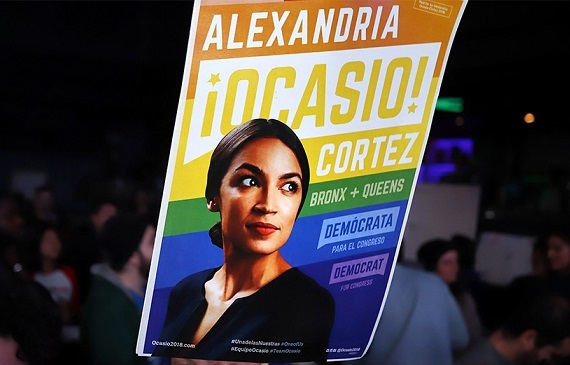

TRAJETÓRIA

Embora tenha interesse também pelas ciências, tendo sido até homenageada na adolescência pelo MIT (Instituto de Tecnologia de Massachusetts) com seu nome num asteróide, focou seu interesse no ativismo e na política. Estudou Relações Internacionais e Economia na Universidade Boston e já nas eleições presidenciais de 2016, foi uma das organizadoras da campanha de pré-candidatura de Bernie Sanders.
Após ser eleita, AOC tem trilhado sua carreira política de forma brilhante, chamando atenção da mídia como uma "estrela do progressismo".